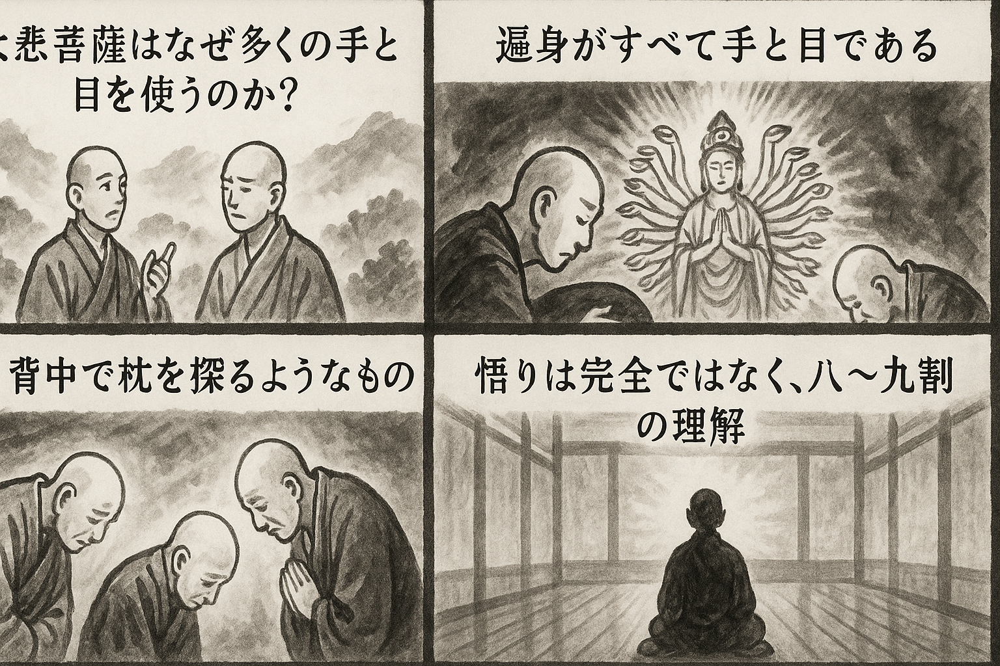

七十五巻 巻一覧
正法眼藏第18 觀音
本ページは各巻の紹介ページです。tools/gen_web_volumes.py が doc/正法眼蔵.txt から要点の短い抜粋を載せています（全文の引用ではありません）。
出典（原文）: https://shomonji.or.jp/zazen/doc/genzou.html
原文・現代語訳の全文は 全文ページを参照してください。
この巻の紹介（概要）
道元『正法眼蔵』七十五巻の第18篇「觀音」です。禅籍・経典への引用や語の行間が重なりやすいので、一度ですべてを要約に還元しない読み方を推奨します。問答 Bot では巻スコープにこの題名を含めると応答が安定しやすいことがあります。
語彙の足場
- 題名語：巻題「觀音」は、道元が本章で特に扱う論点の看板です。辞書義だけに固定せず、原文中の用例で意味を確かめます。
- 引用と典故：公案・経文の引用は、一字一句の照応（何に答えているか）を押さえると全体が見えやすくなります。
- 学び方：抜粋だけでも音読し、分からない箇所は印を付けて後から問うとよいです。
原文（要点の抜粋）
当巻の冒頭付近からの短い抜粋です。長い引用は載せていません。全文は全文ページを参照してください。出典はリポジトリ内 doc/正法眼蔵.txt です。原文の参照元: https://shomonji.or.jp/zazen/doc/genzou.html
雲巖無住大師、問道吾山修一大師、大悲菩薩、用許多手眼作麼（雲巖無住大師、道吾山修一大師に問ふ、大悲菩薩、許多の手眼を用ゐて作麼）。
道悟曰、如人夜間背手摸枕子（人の夜間に手を背にして枕子を摸するが如し）。
雲巖曰、我會也、我會也（我會せり、我會せり）。
道悟曰、汝作麼生會（汝作麼生か會せる）。
雲巖曰、遍身是手眼。
道悟曰、道也太殺道、祗得八九成（道ふことは太殺道へり、ただ道得すること八九成なり）。
雲巖曰、某甲祗如此（某甲はただ此の如し）、師兄作麼生。
道悟曰、通身是手眼。
道得觀音は、前後の聞聲ままにおほしといへども、雲巖道悟にしかず。觀音を參學せんとおもはば、雲巖道悟のいまの道也を參究すべし。いま道取する大悲菩薩といふは、觀世音菩薩なり、觀自在菩薩ともいふ。諸佛の父母とも參學す、諸佛よりも未得道なりと參學することなかれ。過去正法明如來也。
しかあるに、雲巖道の大悲菩薩、用許多手眼作麼の道を擧拈して、參究すべきなり。觀音を保任せしむる家門あり、觀音を未夢見なる家門あり。雲巖に觀音あり、道悟と同參せり。ただ一兩の觀音のみにあらず、百千の觀音、おなじく雲巖に同參す。觀音を眞箇に觀音ならしむるは、ただ雲巖會のみなり。所以はいかん。雲巖道の觀音と、餘佛道の觀音と、道得道不得なり。餘佛道の觀音はただ十二面なり、雲巖しかあらず。餘佛道の觀音はわづかに千手眼なり、雲巖しかあらず。餘佛道の觀音はしばらく八萬四千手眼なり、雲巖しかあらず。なにをもつてかしかありとしる。
いはゆる雲巖道の大悲菩薩用許多眼は、許多の道、ただ八萬四千手眼のみにあらず、いはんや十二および三十二三の數般のみならんや。許多は、いくそばくといふなり。如許多の道なり、種般かぎらず。種般すでにかぎらずは、無邊際量にもかぎるべからざるなり。用許多のかず、その宗旨かくのごとく參學すべし。すでに無量無邊の邊量を超越せるなり。いま雲巖道の許多手眼の道を拈來するに、道悟さらに道不著といはず、宗旨あるべし。
雲巖道悟はかつて藥山に同參の齊肩より、すでに四十年の同行として、古今の因緣を商量するに、不是處は剗却し是處は證明す。恁麼しきたれるに、今日は許多手眼と道取するに、雲巖道取し、道悟證明する、しるべし、兩位の古佛、おなじく同道取せる許多手眼なり。許多手眼は、あきらかに雲巖道悟同參なり。いまは用作麼を道悟に問取するなり。この問取を、經師論師ならびに十聖三賢等の問取にひとしめざるべし。この問取は、道取を擧來せり、手眼を擧來せり。いま用許多手眼作麼と道取するに、この功業をちからとして成佛する古佛新佛あるべし。使許多手眼作麼とも道取しつべし、作什麼とも道取し、動什麼とも道取し、道什麼とも道取ありぬべし。
図解（4コマ・AI生成）
教義の根拠は原文・出典に従い、漫画は比喩の補助に留めてください。

深掘り（読解のコツ）
- 道元文は定義の羅列に見えても、多くの場合誤解への遮断と正伝の姿勢が背骨になっています。
- 「当体」「現成」「即」などの語が出たら、その巻独自の差別相にどう接続しているかをメモしておくとよいです。